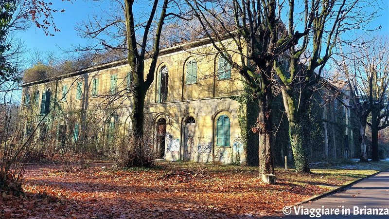

Il manicomio di Mombello
Mombello è una frazione del comune italiano di Limbiate in provincia di Monza e della Brianza, posta a nord rispetto al centro cittadino, al confine con Bovisio Masciago. Gode di una posizione sopraelevata, occupando la prima vera collina , che si incontra provenendo da Milano in direzione di Como. Nella zona del milanese è nota soprattutto per essere stata sede del manicomio provinciale.

Il Villaggio Mombello, appunto, considerato come uno dei dieci luoghi più spaventosi del mondo. Al massimo della capienza, arrivò a ospitare oltre 3 mila pazienti, fra i quali anche il figlio illegittimo di Mussolini, Benito Albino, morto internato nel 1942. A separare il manicomio dal resto del mondo ci pensava un muro di cinta alto due metri e lungo tre chilometri entrato a far parte dell’immaginario locale. “Se non fai il bravo, ti porto de la del mur” dicevano i nonni ai nipotini irrequieti. Ogni tanto qualche paziente lo scavalcava per scappare. Oggi, invece, lo scavalcano per entrare.
un posto cosi famoso si trova a così poco da noi , circa 100km
Torna alla home